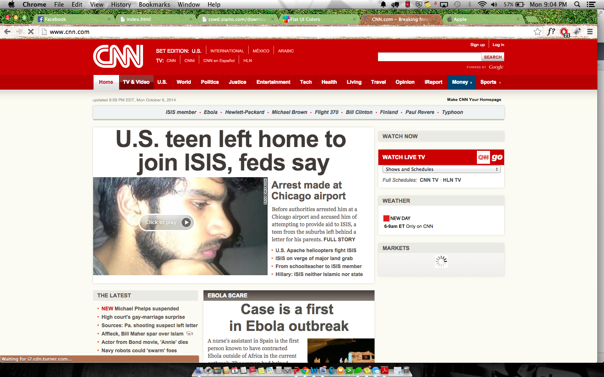

Principles of Design : TC 349
Good vs. Bad - Affordance
The image to the right shows good use of Affordance. Chase's website is very simple and direct, the green button above clearly states that it is clickable due to its features. The 3D roundness of the button tells the user that it is a button and not anything else, it shows good use of affordance because it is not confusing the user on the functionality of the button (The text also lets the user know what the button is use for). On the other hand, the image on left represents poor use of affordance.The tumblr page practices good affordance, but I believe the button could use a bit more 3D effect or roundness to fully deliver the functionality of a button.
Chunking

As you can see CNN's website it is extremely readable and scannable, the user can clearly tell what is the main point or article CNN is trying to expose. The amount content that is displayed on the website can be handled and it is well structured. On the other hand, the image on the left represents a very crowded and congested website. The paragraph's are extremely long which makes the user not want to read the content.
Good and Bad Single to Noise Ratio
Single to Noise Ratio is utilized in all websites, it is the ratio of relevant to irrelevant information in a display. Apple's website is very direct, they want you to focus on their current main focus, which right now is their Iphone 6 or their watch. The colors that are utilized in Apple's website are very relaxed and tranquil, making the user feel comfortable. On the other hand, argren.net it is very stressful and confusing. The user does not where to look or how to interpret the content that is being displayed.
Good and Bad Rule of Thirds
Rules of thirds is a technique that divides the website into thirds, a web creator may use this technique in order to direct the user's eye into what content they want them to observe.As you can see in the image on the right, the different points refer to the various locations the company wants the user to look at.
Good and Bad Modularity
Modularity is the idea of how Smaller components are easier to design and less prone to error. Great examples such as Twitter bootstrap which allow responsive designs across various platforms. The image on the right has a patterned design, the use of "blocks" or "boxes" gives the user the ability to fully understand the content of the website.